Overview of the Bypass Circuit
What it does
When leak testing a workpiece with a large internal volume, reaching the specified test pressure takes time. Using a bypass circuit can greatly reduce this charging time. It is particularly effective for low-pressure, large-volume workpieces (50 kPa or less, 3 L or more).
The bypass unit also includes an exhaust valve, which shortens exhaust time and prevents contaminants from the workpiece entering the tester.
Benefits
- Shorter measurement time — Large-bore valves shorten charging time.
- Shorter exhaust time — Large-bore valves also shorten exhaust time.
- Highly reliable bypass valves — Dedicated large-bore, air-operated leak-tester valves provide high reliability and durability.
- Valve control by the leak tester — The leak tester automatically controls the bypass unit valves using pilot pressure.
Bypass Circuit Schematic
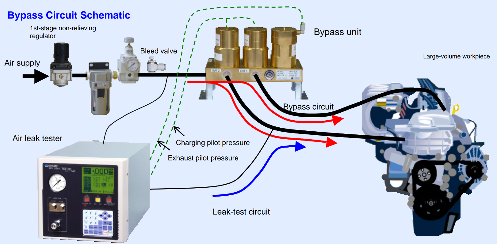
Bypass arrangement with two charging valves — the bypass circuit runs alongside the leak-test circuit.
What Is a Bypass Circuit?
During charging, pressure is supplied through large-diameter piping along a separate route from the leak-test path. This separate route is the bypass circuit.
Two or three charging valves can supply pressure simultaneously to different points on the workpiece, bringing it to the specified pressure more quickly. Increasing the number of bypass routes can reduce the time even further.
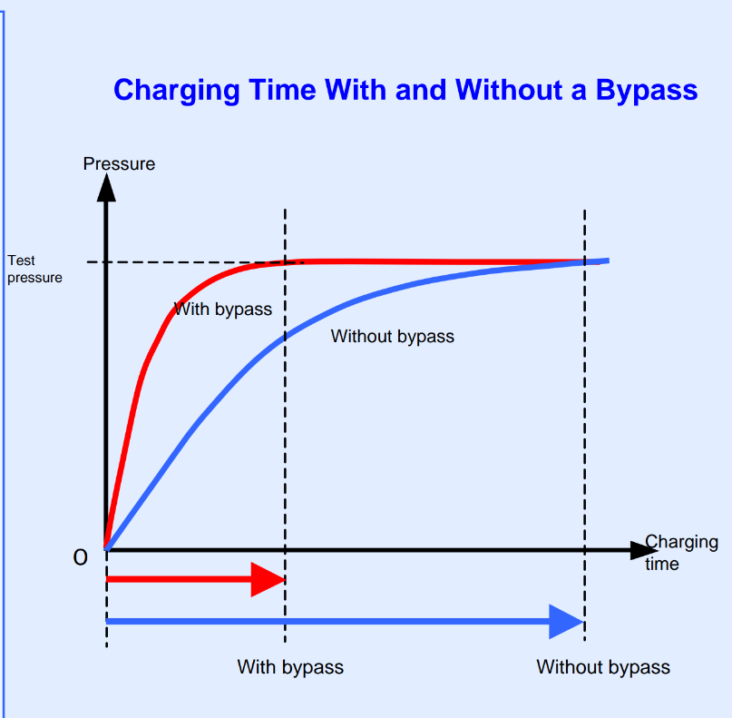
Workpieces with Complex Internal Structures
The Problem
Small inlets, multiple internal chambers or restricted flow passages can slow charging, especially when chambers are connected in series. This effect becomes greater at test pressures of 50 kPa or less.
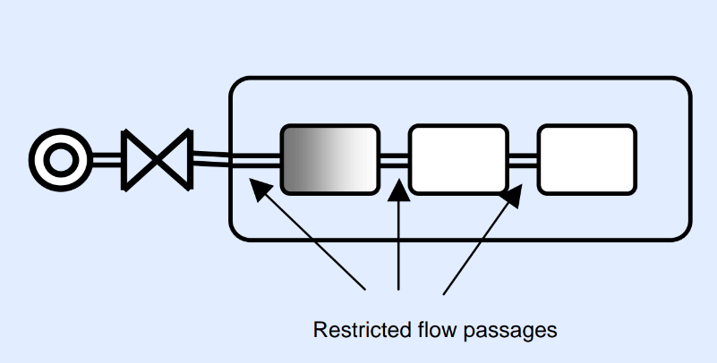
The Solution
Use a bypass unit. Separate, independent charging paths shorten charging time — particularly effective at test pressures of 50 kPa or less.
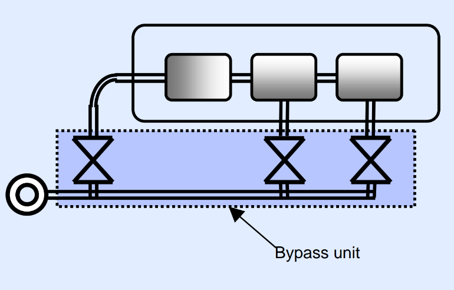
Pressure Stabilization in the Regulator Section
- A mechanical precision regulator gives better charging repeatability than an electropneumatic regulator, but response can be sluggish at 50 kPa or less.
- Use two regulator stages plus an air bleed valve.
- Set the pressure difference between stages to ~100–150 kPa (e.g. 200 kPa first stage for a 100 kPa test pressure).
- Lowering the second-stage inlet pressure and maintaining airflow keeps the orifice slightly open, eliminating sluggish response.
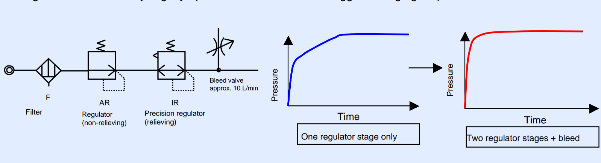
Features of the K-Type Through Exhaust Path
Air inside the workpiece is exhausted through Workpiece 1, 2 and 3.
- Simultaneous exhaust from every port prevents exhaust delays.
- Prevents delays in transmission of the leak signal if the workpiece leaks.
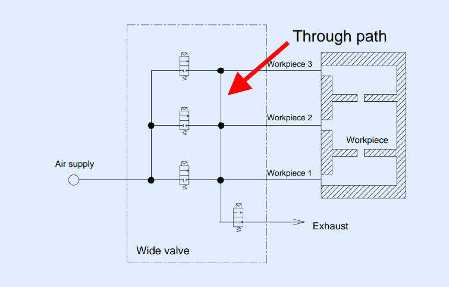
Bypass Units
| BU-100-1 | BU-100-2 | BU-100-3 | |
|---|---|---|---|
| Number of charging valves | 1 | 2 | 3 |
| Approx. workpiece volume*1 | 3 ～ 6 L | 6 ～ 20 L | 20 L or more |
| Test pressure range | -100 kPa (vacuum source) to 500 kPa | ||
*1: Workpiece volumes are guidelines and vary with the leak-test environment and conditions.
Summary
Mastering is a function that searches for the most appropriate compensation amount, complying with test conditions or environments, using the actual Work. Mastering allows high-accuracy air leak testing in a shorter time. Also, just having one Master is good enough, as Mastering can be used for various Work.
Merit of Mastering
Shorten Test Time
Test time can be shortened by compensating for temperature effects caused by adiabatic compression.
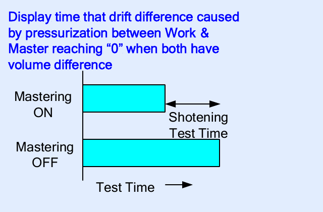
Less Maintenance Man-hour
Man-hour at maintenance or start-up time can be reduced, as Mastering function is carried out automatically.
Graph Shows Compensation Amount
Mastering operation is displayed on the tester screen as a waveform graph, so you can see whether the correct compensation amount is properly detected or not.
Just One Master Does All!
One master chamber can be used for various Work with different internal volumes. Therefore, just one master chamber is good enough.
The master chamber is small, airtight and maintenance-friendly, compared with using a real Work piece as the Master.
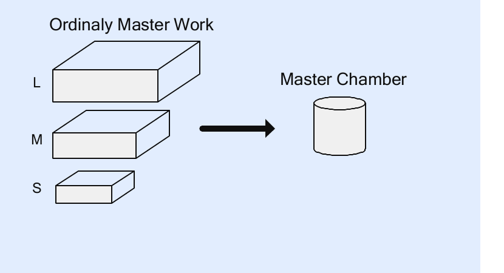
Principle of Mastering
Generally, the temperature of a Work piece changes due to adiabatic compression at the time of pressurization, following a curve like Newton's law of cooling.
Leaks are usually detected in the DET process. However, if a temperature change takes place during DET, correct measurement cannot be carried out, as it heavily affects the leak test. In the past, a Master chamber was used to offset these temperature effects.
Mastering detects the difference between the pressure differences in the actual leak test and that of when the temperature effect ends, after iterating the DET process a preset number of times. That difference becomes the Mastering value (compensation amount), allowing a high-accuracy leak test in a shorter time.
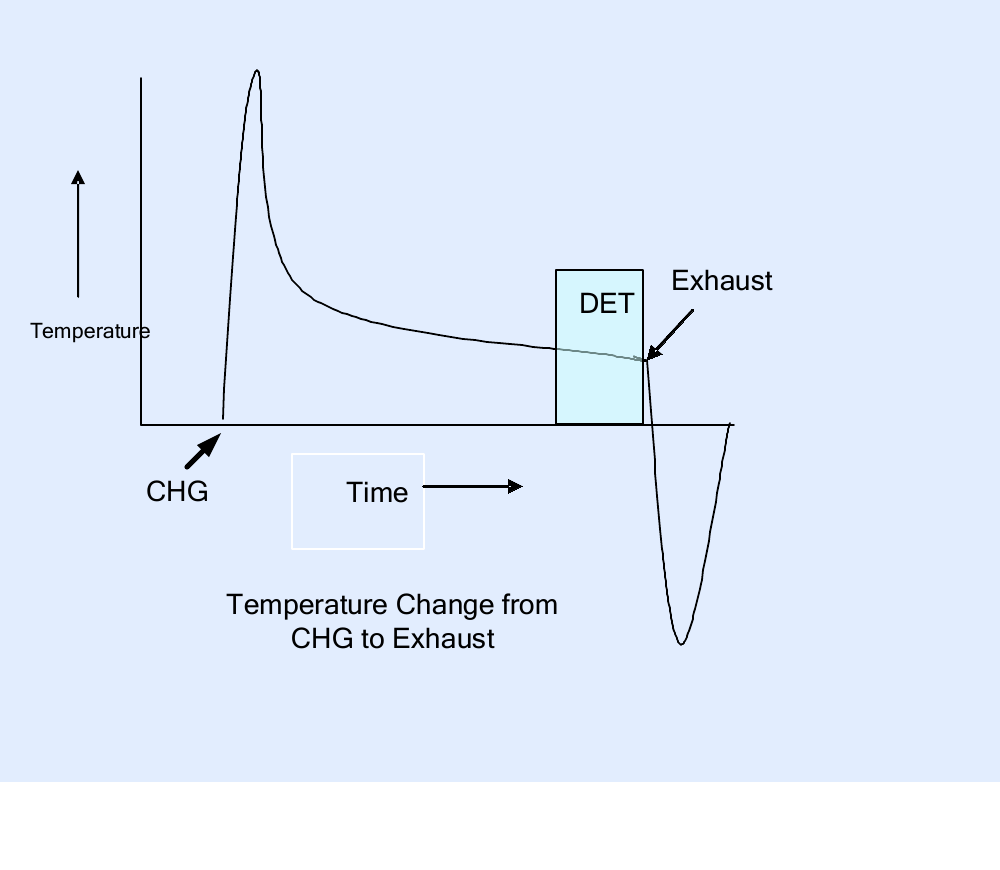
Mastering Operation
In Mastering, the BAL and DET processes are iterated (looped) a preset number of times (N times). The difference between "a" — the pressure difference value in the normal detection process (DET 1) — and "b" — the final value once the temperature effect ends — becomes the Mastering value, regarded as the compensation amount for the next test. "b" is thought to be the unchanged leak value and is not included in the compensation amount.
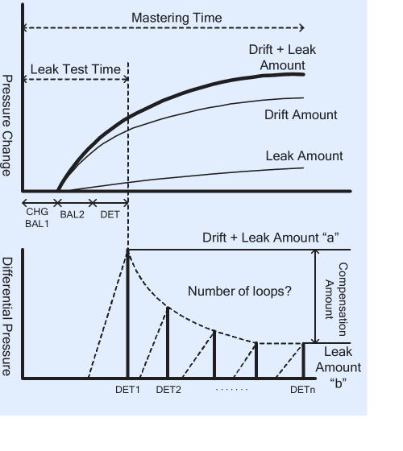
Effect of Equalization Circuit
In the BAL1 process of Mastering, the pressure of the Work and Master is equalized through AV2. This allows correct measurement within the linearity of the differential pressure sensor, without causing an unnecessarily large differential pressure in the DET process, even if the characteristics of the Work and Master differ. Also, the measurement value of each loop can be displayed in a shifting graph by adding the BAL1 process.
Maximum effect is expected when adding the BAL1 process — stabilizing measurement and shortening test time — not only for large-volume Work but also Work with a certain degree of deformation. Note that the mastering effect may vary with test conditions.
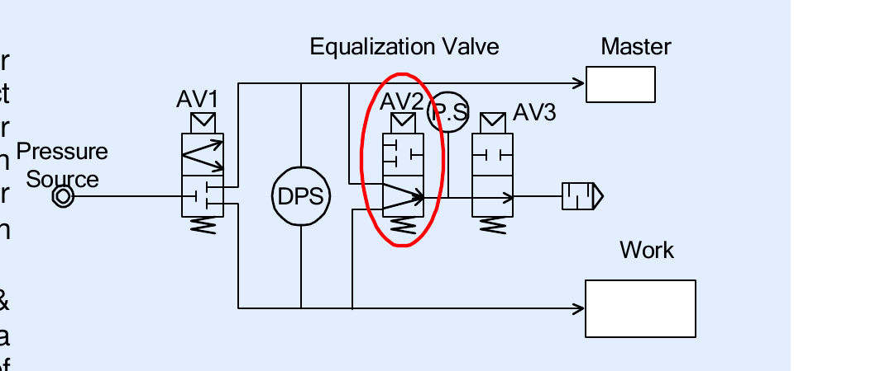
Easy Operation
Mastering is carried out in Mastering Mode with the actual Work. A signal, informing that mastering is in action, can be output by time & date setting. Correct measurement value is obtained even when using an NG Work (a Work with a certain amount of leaks).
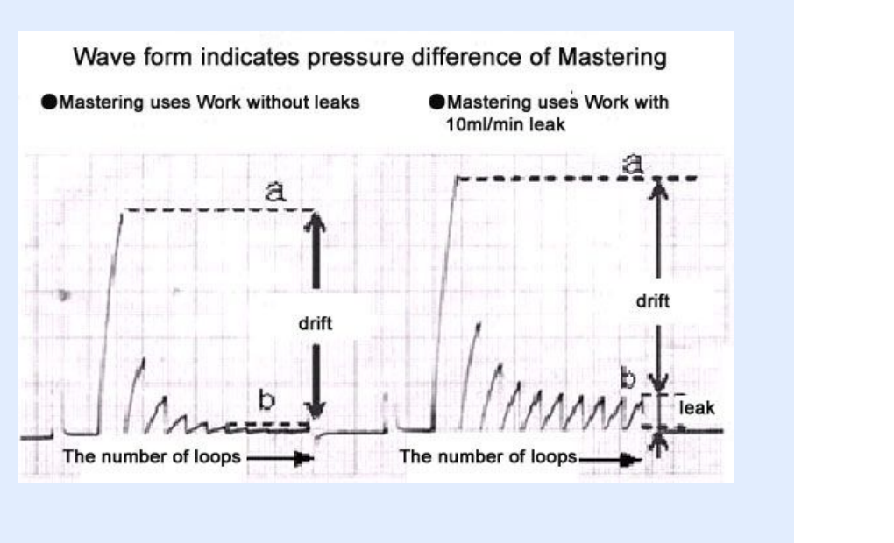
Data Shifting Graph
The Mastering value, as a compensation amount for the leak test, is displayed at the time Mastering completes. Whether Mastering is properly carried out or not can be visually checked using the shifting graph.
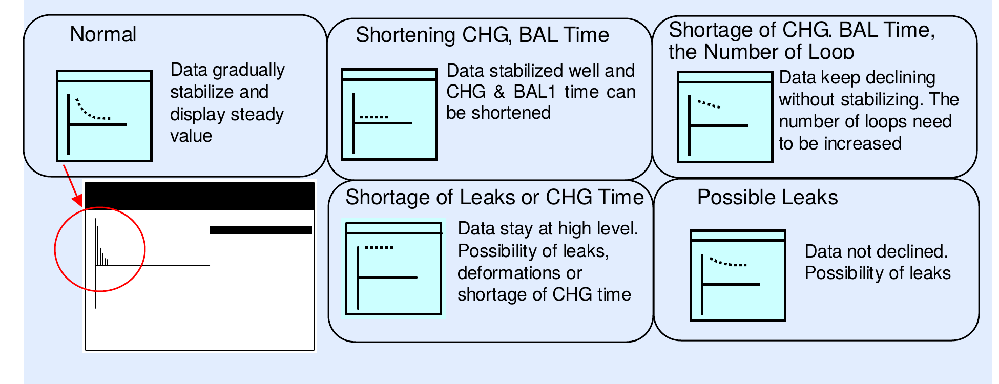
Limit Setting & Ambient Temperature Adaptation
Limit Setting Avoids Excessive Compensation
With the limit setting function, excessive compensation can be avoided.
Ambient Temperature Adaptation + Auto Drift Compensation
This function searches for the compensation value using the average data of OK products. A stable leak test is allowed, as this can compensate for drifts by adapting to gentle changes in ambient temperature after Mastering.
Important Notes
- Note 1 — Mastering cannot be carried out when the Work has internal leaks: The leak rate tends to gradually decline and finally end, as well as effects of adiabatic change, if there is an internal leak in the Work. In that case, a detection value after the second and further leak tests will be smaller than the first one. If Mastering is carried out under such circumstances, the leak rate of the first loop is regarded as the Mastering value, which leads to an inappropriate compensation value.
- Note 2 — Noise cannot be compensated by Mastering: Noise from sealing parts of a jig, tubing/nylon tube, or deformation of the Work cannot be compensated by Mastering. However, compensation might be effective when deformation has declining repeatability. This includes noise generated when Work temperature differs from ambient temperature (e.g. a seal jig), and leaks not originating from the Work — internal leaks generated in a void space of the Work simply stay internal.
Summary
This function sets up an extra limit setting (an "uncertain area") outside the normal limit setting. If test results fall into this uncertain area, the DET process is repeated to ensure a correct judgment, rather than just carrying out exhaust. That allows detecting only the genuine leak element, as repeating the DET process can reduce Noise except for real leaks.
Advantages of Noise Reduction
- Shorter tact time
- Exact amount of leak can be detected by removing Noise
- Automatic re-test in the extra limit setting area
- Improve yield rate without compensation
- Reduce re-test time in large-volume Work
Remarkable Method of Noise Reduction
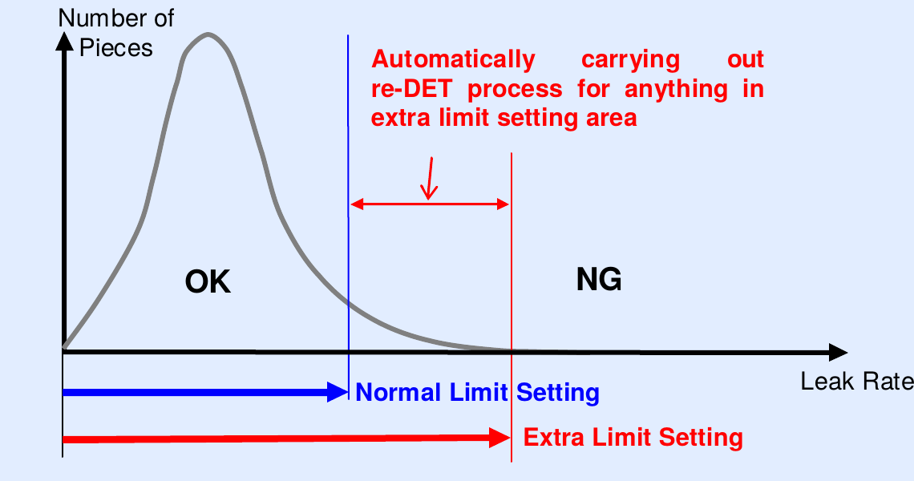
Anything landing in the extra limit setting area automatically triggers a re-DET process.
Ever experienced an OK after once judged NG?
This is because Noise elements are reduced by repeating the DET process, which manages to detect only genuine leaks.
In Noise Reduction, repeating the DET process is carried out automatically and effectively.
Noise Reduction Improves Yield Rate
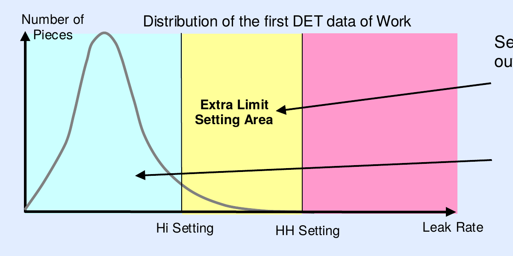
Set up the extra limit setting area outside the normal one.
- Repeat the DET process when a result falls into the extra limit setting area, rather than just carrying out exhaust.
- Judged as an OK product if the result comes into the normal limit setting area after repeating and removing Noise.
- The number of repeating DET processes can be arranged in advance.
Removal of Noise at DET Time
Noise elements (effects of heat or deformation, etc.) add extra leak rate and could cause a mis-judgment, even when a genuinely leaking piece is judged OK. This symptom especially happens when tact time is short. In general, this Noise can be removed by allowing sufficient time for stabilization.
Automatically Repeat DET Process in the Extra Limit Setting Area
- In the repeat DET process, the Noise element is removed due to the longer DET time — meaning the 2nd or 3rd DET process can focus only on changes caused by an actual leak.
- The DET process automatically repeats if a result falls into the extra limit setting area, detecting unstable Work in a stricter way and improving the yield rate of the whole production without prolonging tact time.
- Mastering will not be available while the DET process is repeating.
Differential Pressure to Leak Rate Management
A leak of gas or fluid is determined by its viscosity, pressure difference, and the size of the leak hole. However, in the actual Differential Pressure method, only air pressure is supplied to the Work and the pressure change is detected as a leak. With this method, the value of pressure difference differs even when the tester indicates the same leak rate, for Work pieces of different internal volume.
Cosmo's air leak tester is equipped with an Automatic Leak Calibration system that converts pressure difference to leak rate (mL/min). This system allows easy quality control management, such as daily sensitivity checks and leak rate calibration.
Equivalent Internal Volume K(Ve)
Equivalent Internal Volume K(Ve) is the constant that converts the amount of differential pressure change, set in the DET process, to leak rate by DET time. The relation between leak rate Q and pressure difference ΔP is: Q = K(Ve) × ΔP ⁄ (1.013×10⁵) × 60 ⁄ T, where Q is the leak rate (mL/min), ΔP is the pressure difference (Pa), T is the DET time (sec), and K(Ve) is the Equivalent Internal Volume (mL).
Two methods are available in the leak tester to calculate Equivalent Internal Volume: the first by flow reference (Leak Master), and the second by generating a pressure difference through volumetric change. Equivalent Internal Volume can also be called the Leak coefficient, indicated as "Ve" in theoretical expressions.
Calculate K(Ve) by Leak Master
- Calculate Equivalent Internal Volume K(Ve) by applying a given leak rate to the Work measurement system.
- Select the most appropriate Leak Master from the LM-1B-J1 series, based on the internal volume of the Work and test pressure.
- Calculate K(Ve) via calibration mode, after installing the Leak Master to the Work CAL port of the tester.
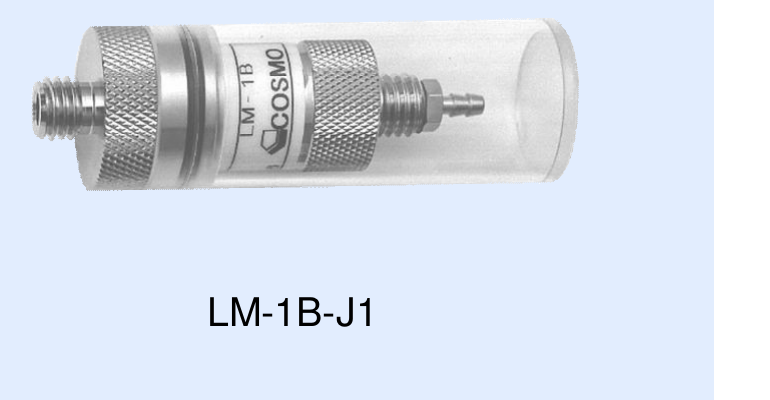
Note: Leak Rate Varies with Barometric Pressure
Even for the same Work, the leak rate tested at a low-barometric-pressure place (such as high altitude) is larger than one tested at a high-barometric-pressure place (such as low altitude). We recommend using a Leak Master to control leak rate in such cases — one calibrated at normal barometric pressure allows no environmental effects when calculating Equivalent Internal Volume.
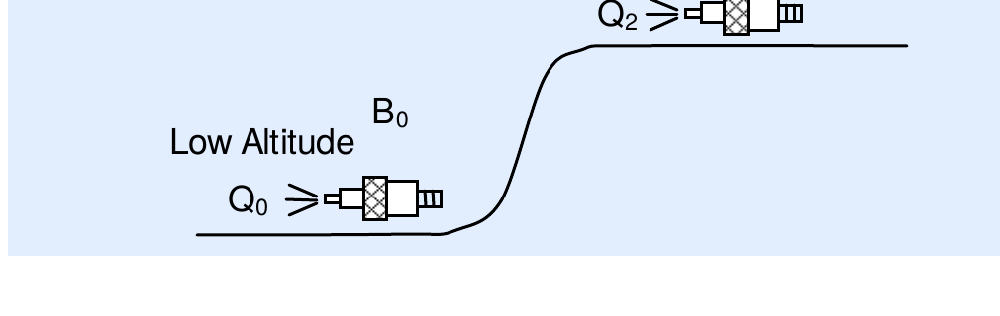
Leak Coefficient by Volumetric Change
K(Ve) can also be calculated from the pressure difference generated by a volumetric change during the DET process, using K(Ve) = V × P ⁄ ΔP, where V is the volumetric change (mL), P is the test pressure — absolute pressure (Pa), and ΔP is the pressure difference caused by the volumetric change (Pa).
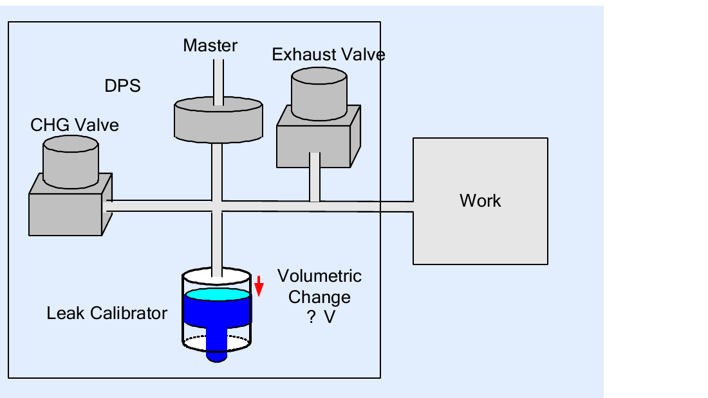
Automatic Calculation of Leak Coefficient K(Ve)
Auto Leak Calibration by Cosmo's Original ALC
- Auto calculation of K(Ve) is allowed by building the ALC into the leak tester.
- An accurate K(Ve), compensated through the process of detecting drift, leak rate and differential pressure by volumetric change, is calculated.
- A regular total machine check can be carried out on command from the machine side.
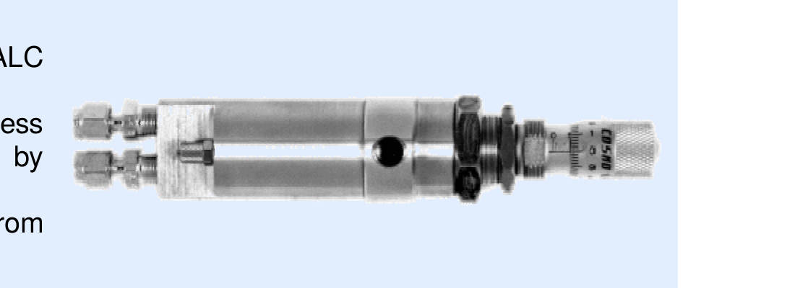
Manual Leak Calibrator
K(Ve) can be calculated by manually generating a volumetric change during the DET process. This manual leak calibrator can always be made available by installing it to the Work measurement system.
Quick Leak Calibrator — QLC Series
Generates a pre-determined volumetric change, set by dial reading, in one-touch action. Available even in short DET time.
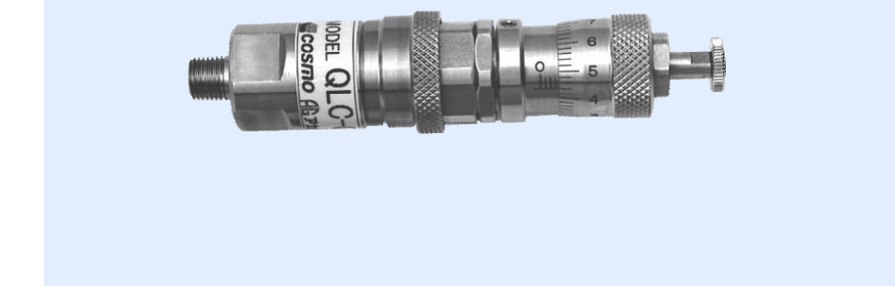
Easy Leak Calibrator — LC Series
Generates volumetric change by dial (not ideal when test pressure is high or DET time is short). Its handy size allows installation to the Work CAL port on the front panel.
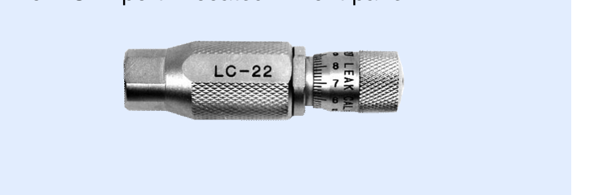
CAL Port — Ideal for Leak Calibration and Daily Check
- CAL ports on the Work and Master side allow accurate differential-pressure calibration.
- Daily check and calibration can be carried out easily, without unplugging the Work tubing.
- Daily check and K(Ve) calculation can be carried out by installing a Leak Master and Leak Calibrator, etc.
- Calibration of the DPS and PS can be carried out by installing a standard manometer and micro pressure generator.
- The Master CAL port, open to the atmosphere, is available to carry out accurate DPS calibration.
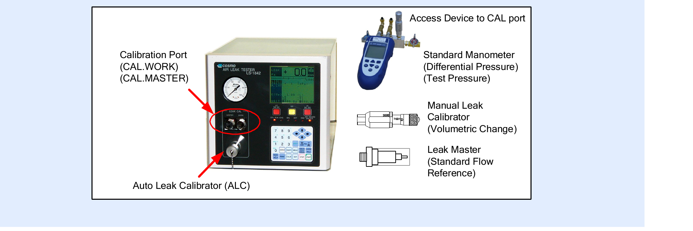
Original Calibration System by Auto Leak Calibrator (ALC)
- Cosmo's original leak calibration system uses the ALC to automatically generate volumetric change, giving reliable, high-accuracy leak rate management.
- K(Ve) can be calculated without any external tools.
- K check — a regular check including sensitivity of the whole machine — can be carried out automatically.
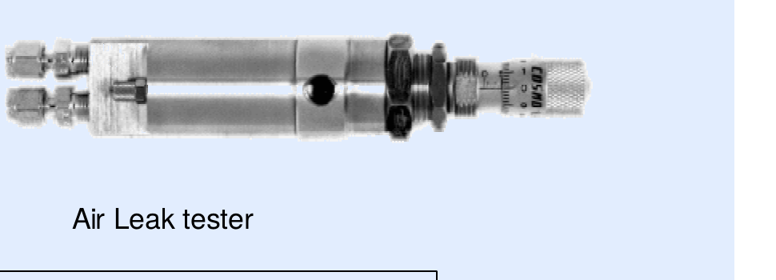
Auto Leak Calibrator (ALC)
Calculate K(Ve) by Volumetric Change
Conversion of pressure difference (Pa) to leak rate (mL/min) in the DET process is allowed by calculating K(Ve). K(Ve) can be calculated from the pressure difference generated by applying a certain amount of volumetric change (ΔV) to the Work measurement system in the DET process: K(Ve) = V × P ⁄ ΔP.
The volumetric change method has two ways: (1) ALC — generates automatic volumetric change, and (2) Manual Leak Calibrator.
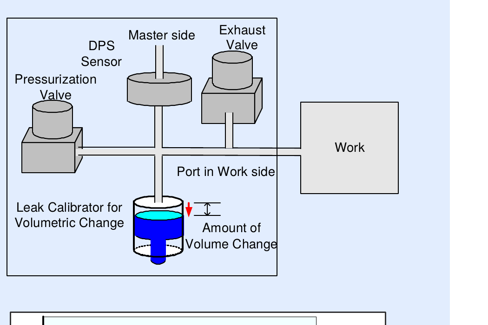
Calibration Action by ALC
Volumetric change applying to the Work is adjusted in advance by the ALC dial. Once CAL Mode is activated, K(Ve) is calculated through a process that detects the pressure difference generated by the volumetric change as well as by factors other than volumetric change.
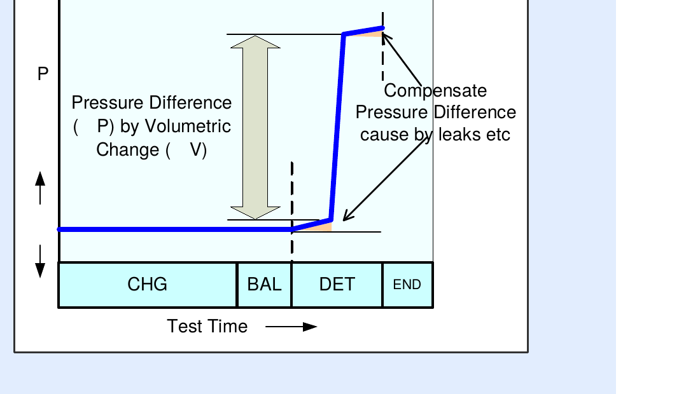
ALC Built-in Intelligent Pneumatic Circuit
The ALC is integrated directly into the tester's pneumatic circuit, alongside the air-operated valves (AV1–AV3), DPS sensor and pressure source, so volumetric change can be generated and measured without any external tooling. Note that the ALC (Auto Leak Calibrator) is not a standard specification.
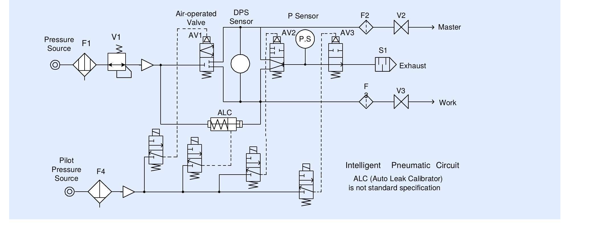
Selection Sheet of ALC
Select the calibrator based on test pressure and Work internal volume.
| Model | Max. Variable Volume | Minimum Scale Value | Pilot Pressure (kPa) |
|---|---|---|---|
| ALC-05A | 0.5 mL | 0.001 mL | 400 – 700 |
| ALC-1A | 1 mL | 0.002 mL | 400 – 700 |
| ALC-4A | 4 mL | 0.008 mL | 400 – 700 |
| ALC-10A | 10 mL | 0.02 mL | 400 – 700 |
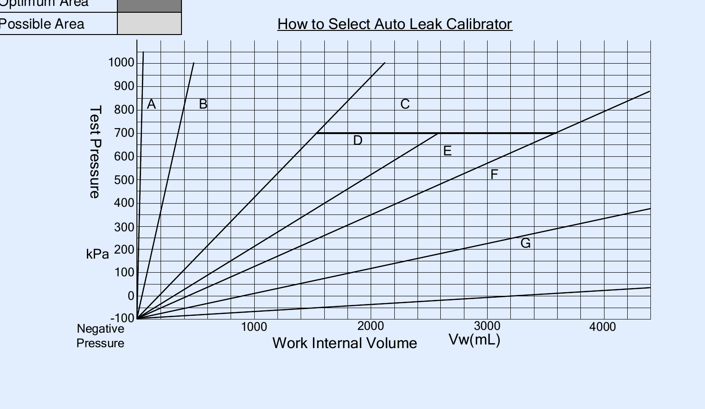
How to select the right Auto Leak Calibrator by test pressure and Work internal volume (Vw).
K Check Function Allows Easy, Reliable Regular Check
- The K check function outputs an error if the K(Ve) currently being calculated differs from the one previously memorized in the system.
- Regular K check allows leak sensitivity and whole-system checks — mistakes in channel setting can be avoided when testing Work of different volumes across multiple channels.
- Automatic K check is possible, as it can be operated externally.
- K check is available on Air Leak testers with an ALC, or J-type testers with a built-in Leak Master calibration valve.
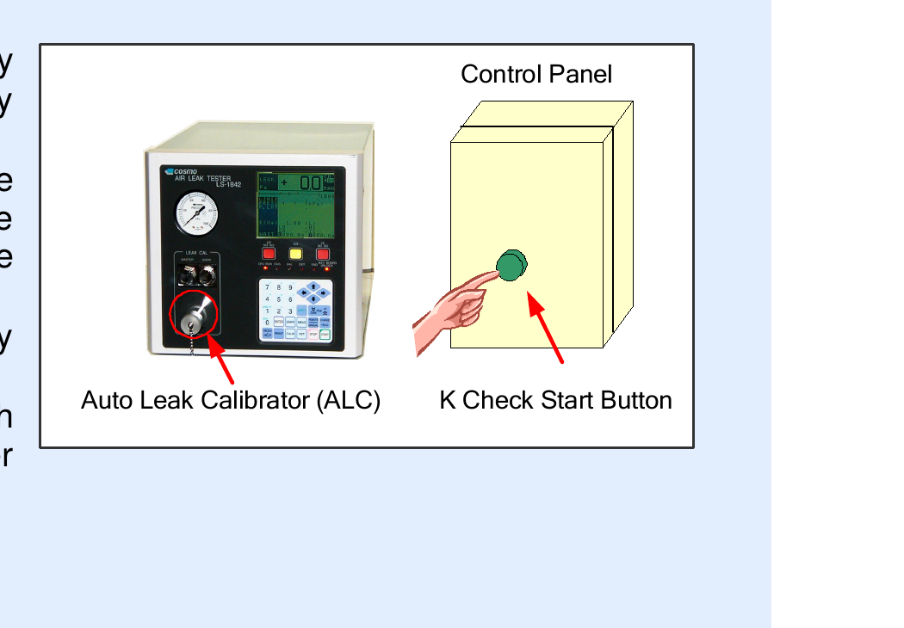
Manual Leak Calibrator
K(Ve) can also be calculated by generating volumetric change manually during the DET process. It can be installed into the Work measurement system.
Quick Leak Calibrator — QLC Series
Generates a pre-determined volumetric change, set by dial reading, in one-touch action — even in short DET time.
Easy Leak Calibrator — LC Series
Generates volumetric change by dial (not ideal when test pressure is high or DET time is short). Its handy size allows installation to the CAL Work port on the front panel.
Flow Reference — Leak Master
The Leak Master is an essential tool for quality control of the whole leak-testing system — for example, calibrating leak rate at startup, or during daily quality control checks.
- LM-1B — Daily OK/NG check
- LM-1B-J — Measurement of Equivalent Internal Volume K(Ve)
Features
- Less leak-rate change over time, allowing long-term stability.
- Any leak rate can be arranged on request (with some exceptions).
- Easy exchange with a seal plug.
- Traceability can be issued.
Calculate K(Ve) by Leak Master for Calibration
Calculate Equivalent Internal Volume K(Ve) by applying a given leak rate to the Work measurement system. K(Ve) is measured and displayed in Calibration mode by installing a Leak Master — selected based on Work internal volume, test pressure, etc. — to the CAL port and activating it.
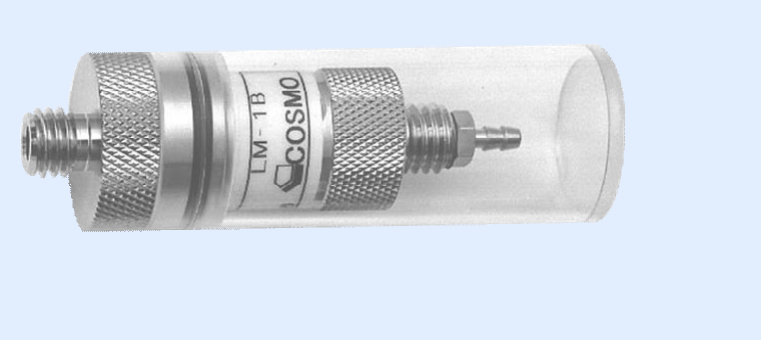
Types of Leak Master (LM-1B-J1 Series for Calibration)
| Leak Rate at 100 kPa (L/min) | 1 | 2 | 5 | 10 | 20 | 50 | 100 | 200 |
|---|---|---|---|---|---|---|---|---|
| Test Pressure Range (kPa) | 20 ~ 600 | 20 ~ 300 | 20 ~ 200 | 20 ~ 100 | ||||
In the LM-1B-J1 series, leak rate data at each test pressure point is attached with the product.
Selection of Leak Master LM-1B-J1
Example: Volume less than 1000 mL with Medium Pressure
Select the most appropriate Leak Master based on Work internal volume and test pressure. Example: Work volume Vw = 500 mL, Test Pressure P = 300 kPa. Extend a line from the crossing point of Vw and the Upper/Lower limit to the test-pressure zone (left side) — the green line shows the most appropriate leak-rate zone. In this example, J1-5 is the best option.
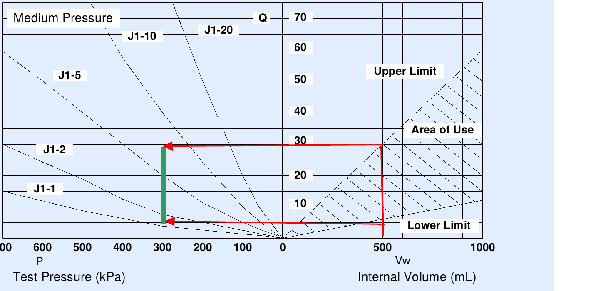
Example: Work less than 2000 mL with Low / Negative Pressure
Example: Work Volume Vw = 1000 mL, Test Pressure P = 40 kPa. J1-100, falling in the green-line zone, is the best selection in this case.
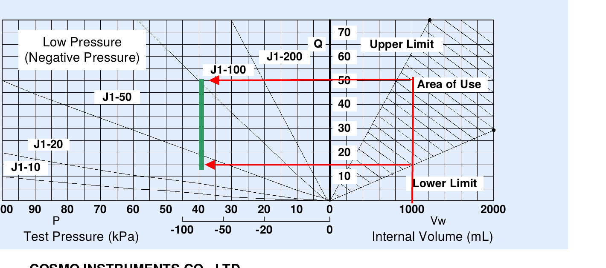
Difference Between Daily-Check Leak Master & Calibration One
It is better to have a Leak Master with a large leak rate when calculating K(Ve). A Leak Master with a large leak rate allows more accurate calculation of K(Ve), as the ratio of pressure difference (a) to error factors — such as deformation or temperature effects other than the leak itself — gets smaller.
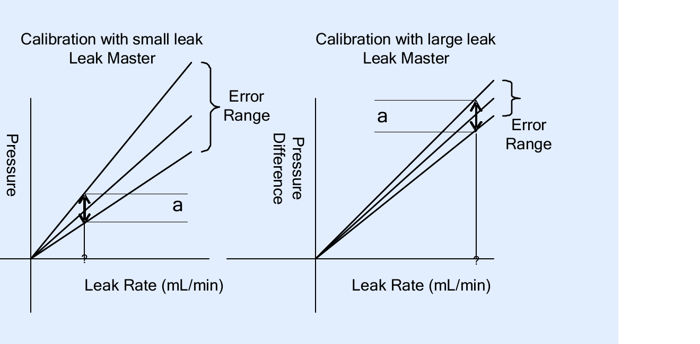
Regular Check of NG Product
A self-check function checks for valve failure or test pressure issues, available in Cosmo's air leak testers. However, slight changes in leak sensitivity, or an operation mistake when changing a jig, should be supervised by a regular check.
Leak sensitivity check by Leak Master is effective for any kind of failure check. It's recommended to carry this out not only at the beginning of a shift, but also whenever a tool, jig or parameter is changed.
The example figure shows a Leak Master arranged with 15% more leak rate than the limit, in order to carry out NG judgment. (Depending on the Air Leak tester type, self-check function may not be available.)

Leak Master for Daily Check
The CAL port sometimes cannot be reached due to the tester's location. In that case, the operator can set up a Leak Master somewhere easy to work, by diverting the Work tubing. Moreover, the Leak Master will always be ready to use if a stop valve is installed before it.


No matching feature found.